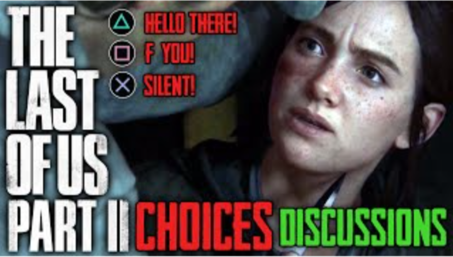

Liberatory Power of the End in "The Last of Us"
Kermode’s understanding of the end sparked a new tradition in the media,
an intense obsession with the end. From “The Walking Dead” to “Manifest”,
concepts of apocalypse, death, and the end have been thoroughly explored.
Through the images of the end, we can find a sense of comfort, and in turn
the image of end becomes liberatory.
“The Last of Us” is a shining example
of this use of the end. The game's protagonists, Joel, and Ellie, navigate
a world where survival seems senseless, and the last of human society are
on the brink of collapse. This mirrors Kermode's notion of an impending
end, a sense that the existing order is unraveling as we continue through
existence. The game has the player continue, even after deaths of major
characters and leaves one often questioning the purpose of living in this
death riddled world.

Kermode's assertion that apocalypse depends on a concord of imaginatively
recorded past and imaginatively predicted future finds resonance in the game's
narrative. For Kermode there is a use in the end in which we imagine it literally
rather than figuratively. “The Last of Us” uses these images of the end to help
the player interrogate their beliefs if the end. The player makes decisions
based on their own conceptualization of the apocalypse. How will they interact
with other characters? What decisions will they make to help their character?
Both these questions are answered by the narratives of doom, destruction, and
apocalypse present throughout the narrative.
The game raises questions
about the nature of storytelling itself. In a world where traditional
narratives have collapsed, the characters seek to create new stories, new
meanings, and a sense of purpose. In a Time Magazine, Article, the game’s
creator, Neil Druckmann, states “the end of the game is something of a
Rorschach test. Some players don’t hesitate. They will do anything to save
their surrogate child. Others are more reluctant to do so. Most games
would offer some sort of compromise, a way for the hero of the story to
remain a hero”. This proves there is exemplary power to how
the character/player plays through the end of the game. How the player
views their needs changes the narratives explored in the game. Real world
experiences and confrontations of endings by the player directly influence
the ways in which they play game. This explores the ideas Kermode
theorizes, the vision of the end is malleable based on our own personal
experiences with its presence.

"The Last of Us" demonstrates how the
exploration of the end can be both a source of comfort and a liberatory
experience. The games forces players to confront their own ideas of the
end and apocalypse, echoing Kermode's assertion that the end is not merely
a literary device but a powerful lens through which we examine our own
existence.